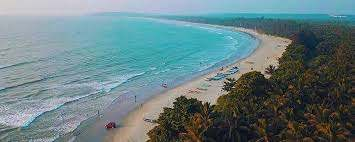
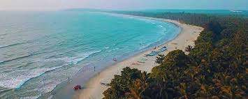

Kannur district derived its name from the location of its headquarters at Kannur town. The old name ‘Cannanore’ is the anglicised form of the Malayalam word Kannur. According to one opinion, ‘Kannur’ is a derivation from Kanathur, an ancient village, the name of which survives even today in one of the wards of Kannur Municipality. Another version is that Kannur might have assumed its name from one of the , deities of the Hindu pantheon, a compound of two words, Kannan (Lord Krishna) and Ur (place) making it the place of Lord Krishna. In this context, it is worth mentioning that the deity of the Katalayi Sreekrishna temple was originally installed in a shrine at Katalayi Kotta in the south eastern part of the present Kannur town.
KANNUR
TOURIST PLACES
Payyambalam Beach

The impeccably unspoiled Payyabalam beach is adorned with sparkling pearls of golden sand and foamy white waves of the Arabian Sea. The highlight of Kannur and one of the many beautiful beaches of Kerala, the Payyabalam beach has an incredibly peaceful and inviting aura. Unwind after a long week by relaxing at this remarkable seashore and find yourself mesmerized by its elegant beauty and contagious calm. The approach to the beach is through a small crossover bridge that is built over a narrow canal.
Click here for moreMuzhappilangad Beach
 

The Muzzhapilangad Drive-in Beach at Kannur is one referred to with many superlatives- as the longest drive-in beach in the whole of India, as one of the cleanest beaches of Kannur and most importantly, as one of the best drive-in beaches that the entire Asian continent has to offer!
Click here for moreArakkal Museum
.jpg)
The Arakkal Museum in Kannur city is one of the most significant and frequently visited attractions of the south that celebrates the memory and grandeur of Kerala's only Muslim royal family- the Arakkal Ali Rajas. Previously a majestic palace of the royal family and their actual place of residence, this museum is a true testimony to the impeccable Muslim architecture and design.
Click here for moreParassinikkadavu
.jpg)
About 16 km away from Kannur, Parassinikkadavu is a town popular for its Muthappan Temple and Parassinikkadavu Snake Park. The Muthappan temple, dedicated to Sree Muthappan is the only Hindu temple in the state which witnesses a Theyyam performance daily as per ritual.
Click here for more